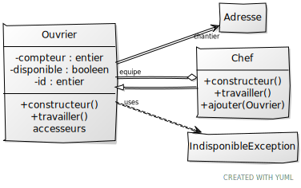
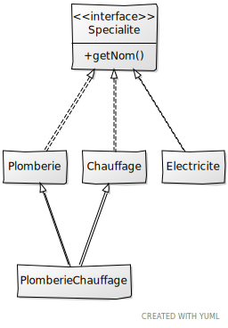

Voici votre examen de C++ ZZ2. Lisez tout le sujet avant de commencer : un certain nombre de tests ont été écrits pour être indépendants ou avec peu d'influence sur les autres.
À la fin de l'examen, vous devez laisser un programme qui compile.
Pour plus de simplicité, vous DEVEZ utiliser trois fichiers en plus de main.cpp : tests.cpp, batiment.hpp et batiment.cpp. Ne changez pas la casse et n'ajoutez pas de fichiers, cela casserait la chaine de compilation et engendrerait une note nulle.
Toutes les déclarations seront dans l'entête, les définitions/implémentations seront dans le cpp.
La ligne de compilation est la suivante :
make
Si besoin, vous pouvez faire un make clean. La première compilation de la bibliothèque Catch est un peu longue, comme d'habitude
Ne jamais recommenter un test qui a réussi. Tous les tests décommentés doivent compiler dans le même temps (sauf mention contraire).
Pour garder une trace exécutable de votre programme sans stress supplémentaire :
Vous allez plus ou moins implémenter les diagrammes UML ci-dessous. Toute ressemblance avec un autre examen serait purement fortuite.
Adresse qui permet de représenter une adresse avec un nom, une latitude et une longitude. Les valeurs par défaut donne l'adresse de l'ISIMA [Adresse1]. toStream() qui permet d'envoyer un affichage lisible sur le flux donné en paramètre. On pourra prendre std::cout par défaut. Vous avez vu en TP que pour que l'affichage des nombres réels soient corrects, il faut envoyer std::fixed sur le flux, puis la commande std::setprecision(n) où n est le nombre de chiffres après la virgule souhaités.[Adresse3]On s'intéresse ensuite à la classe Ouvrier dont chaque instance est identifiée de manière unique par l'attribut id
travailler() lève une exception IndisponibleException [Indisponible1]On s'intéresse ensuite à un ouvrier spécialisé à savoir un Chef
Chef qui gère une equipe[Chef1]travailler() lève une exception IndisponibleException [Indisponible2]Chaque ouvrier possède une ou plusieurs spécialités comme le montre le diagramme ci-dessous :
Specialite est une interface au sens C++ [Specialite1]Plomberie, Chauffage et Electricite sont des classes [Specialite2]PlomberieChauffage aussi [Specialite3]Il n'y a pas de fuite mémoire à votre programme !
Préparation du compte (1 fois, au début) :
git config --global user.name "un_nom"
git config --global user.email "un_mail"
Préparation du répertoire :
git init
À chaque nouveau fichier:
git add fichier
git add *
Sauvegarder / Committer :
git commit -am "commentaire"
git log permet d'avoir la liste des sauvegardes avec un numéro de hachage
Pour revenir en arrière :
git checkout numero_de_hash
OU git revert numero_de_hash